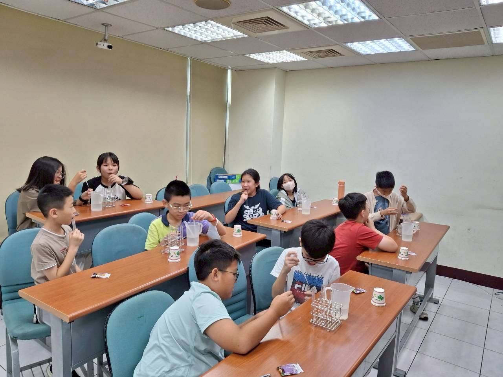

課程內容
高年級 資優數學 課程
專為國小五、六年級學生設計，內容深入但有趣，協助學生建立扎實數學基礎， 挑戰更高層次的數學能力。
從作業完成、考前複習到國英數能力養成，為每位孩子安排清楚的學習節奏。 老師即時掌握作業、小考與成績狀況，讓學習不再只是壓力，而是能被整理、被陪伴、被推進的日常。

依學生階段安排校內進度、檢定訓練與升學能力養成，補足基礎，也建立解題與應考實力。
專為國小五、六年級學生設計，內容深入但有趣，協助學生建立扎實數學基礎， 挑戰更高層次的數學能力。
以同步校內進度、邏輯演算與檢定訓練為主軸，強化數學基礎與解題思維， 奠定良好的數學檢定實力。
適合國小三到六年級學生，以全方位學習輔導計畫，打造孩子穩定又有競爭力的學習節奏。
真實教室情境，從國文課堂、實驗活動到課後練習，讓孩子在穩定節奏裡專注學習。



老師把孩子的學習狀況整理成能追蹤、能調整的日常安排，讓進步有方向，也讓家長看得到。